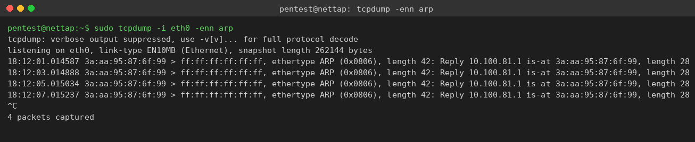
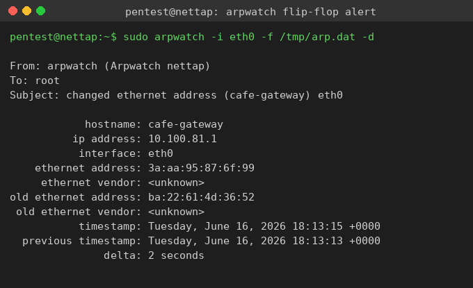
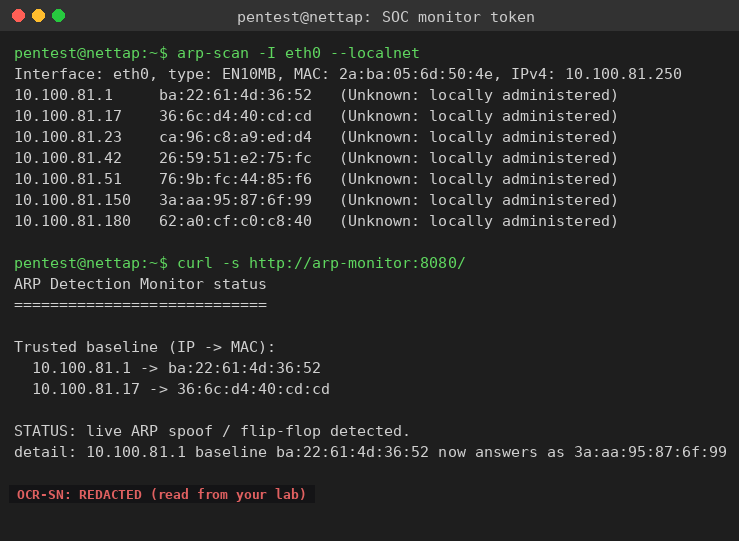

Exercise 8A: Catching the Spoofer
Engagement Status
Client: Bean & Byte Cafe Role: Blue Team Analyst Phase: Reconnaissance Service Enumeration Exploitation Detection
What you know so far:
- You have mapped every device on the cafe network and recorded their MAC addresses
- You have baselined normal ARP behavior in the earlier reconnaissance exercises
- A suspicious customer has been sitting in the corner booth for hours with a laptop
- The POS terminal has been experiencing intermittent network slowdowns
Your task: Get onto the cafe broadcast domain, deploy ARP monitoring, catch an active ARP spoofing attack as it happens, and read the detection token from the cafe SOC monitor.
Objective
Detect a live ARP spoofing attack against the Bean & Byte Cafe network. Establish a baseline of trusted MAC-to-IP bindings, observe the rogue device poisoning the gateway binding, identify the rogue MAC address, and retrieve the flag token that the cafe SOC monitor publishes once it independently confirms the attack.
Difficulty: Intermediate Estimated time: 60 minutes
Background: How ARP Spoofing Detection Works
The ARP Trust Problem
ARP has no authentication mechanism. When a device receives an ARP reply, it updates its cache unconditionally, even if it never sent a request. The unconditional acceptance exists for efficiency, but it means any device on the network can claim to own any IP address.
An ARP spoofing attack abuses that trust by sending forged ARP replies that bind the attacker's MAC address to a victim's IP address. Other devices then send traffic destined for the victim to the attacker instead. In this scenario the rogue device claims to be the cafe gateway, so traffic meant for the gateway flows through the rogue laptop first.
Two Places You Will See the Attack
There are two independent vantage points in this lab, and you use both:
-
Your network tap (the .250 host). You run
tcpdump,arpwatch, andarp-scanhere. The rogue sends its gateway-impersonation reply as an Ethernet broadcast, and a Docker bridge floods broadcast frames to every port, so your tap sees the forged replies arrive. The learning happens here: you watch the attack with your own tools. -
The cafe SOC monitor (the arp-monitor host). A small active sensor learns the trusted baseline at startup, then probes the protected hosts and watches its own neighbor cache. Once it confirms the gateway binding has changed, it publishes the detection token on an HTTP status page. The flag is delivered here.
What arpwatch Reports
arpwatch watches ARP traffic and keeps a database of MAC-to-IP bindings. When a binding changes, it raises an alert:
+------------------+---------------------------------------+
| arpwatch alert | meaning |
+------------------+---------------------------------------+
| new station | a MAC/IP pair seen for the first time |
| changed ethernet | a known IP now answers from a |
| address | different MAC than before |
| flip flop | an IP alternates between two MACs |
+------------------+---------------------------------------+
A changed ethernet address alert for the gateway IP is the headline detection signal in this lab: the gateway answered from one MAC during baseline, then suddenly answered from the rogue's MAC.
The arp.dat File
arpwatch keeps a flat-file database (arp.dat) with one binding per line:
When you seed it with the trusted baseline before the attack begins, the rogue's forged reply triggers the changed-address alert against your known-good entry.
Tools You Will Need
| Tool | Purpose | Example |
|---|---|---|
tcpdump |
Capture raw ARP frames and read the forged replies | tcpdump -enn arp |
arpwatch |
Track MAC/IP bindings and alert on changes | arpwatch -i eth0 -f /tmp/arp.dat -d |
arp-scan |
Active ARP discovery of the whole subnet | arp-scan -I eth0 --localnet |
arp |
View the local ARP cache | arp -an |
curl |
Read the SOC monitor status page | curl -s http://arp-monitor:8080/ |
All of these are pre-installed on the network tap.
Flag Progress
The flag has 2 parts. Both come from the SOC monitor token after the live attack is confirmed:
| Part | Source | Token | Found? |
|---|---|---|---|
| 1 | Baseline established, arpwatch-style binding learned | ________ |
|
| 2 | Flip-flop / changed ethernet address confirmed for the gateway IP | ________ |
Assembled flag format: OCR{________}
Step 0: SSH Into the Network Tap
ARP is a Layer 2 protocol. ARP requests and replies are never forwarded across a router, so you must run your tools from a host that shares the cafe broadcast domain. Blackridge Security has placed a network tap on the cafe subnet at the .250 address for exactly this. Reach it over the VPN with SSH.
Connect to the tap
Replace the address with the .250 host shown on your lab page. The password is Security1#.
Why not run this over the VPN directly
ARP tools need to send and receive raw Layer 2 frames on the same wire as the targets. The VPN delivers IP packets, not the broadcast ARP frames you need to see. Running tcpdump arp from your own machine across the VPN shows nothing. Always work from the tap.
Confirm your interface and address on the tap:
You are now on the cafe /24 alongside every cafe device.
Step 1: Map the Network and Record the Baseline
Before the attack escalates, learn the trusted MAC-to-IP bindings. An active ARP sweep is the fastest way to populate them.
Sweep the subnet
The --localnet flag scans the entire /24 derived from your interface.
Record each host and its MAC. These are your reference for "normal":
| Device | IP offset | MAC (record yours) | Seen? |
|---|---|---|---|
| Gateway | .1 | ||
| POS Terminal | .17 | ||
| Barista Workstation | .23 | ||
| Printer | .42 | ||
| Smart Thermostat | .51 | ||
| Rogue Device | .150 | ||
| SOC Monitor | .180 |
The rogue is already on the wire
Notice that an extra host appears at the .150 offset. The cafe inventory has no device there. Note its MAC down: in a moment you will match the spoofed gateway reply against it.
Step 2: Watch the Spoof Arrive with tcpdump
The rogue device begins forging ARP replies a short time after the lab starts. The forged reply claims the gateway IP belongs to the rogue's MAC, and it is broadcast to the whole segment, so your tap captures it.
Capture ARP frames
The -e flag prints the source Ethernet MAC, and -nn keeps addresses numeric.
Within a few seconds you will see a steady stream of unsolicited replies for the gateway IP:

Read one line carefully:
The gateway IP (ending in .1) is being claimed by the MAC 3a:aa:95:87:6f:99. Cross-reference that MAC against your arp-scan output: it belongs to the host at the .150 offset, the rogue laptop. No legitimate device should ever broadcast "the gateway is at my MAC."
Yours will differ
Docker assigns a fresh MAC to every container each run, so the exact MAC in your capture will not match the one printed here. The pattern is what matters: an unsolicited broadcast reply binding the gateway IP to a MAC that belongs to the unexpected .150 host.
Step 3: Confirm the Change with arpwatch
tcpdump shows the raw frames. arpwatch turns them into a clean alert by comparing against a known-good baseline. Seed its database with the trusted bindings you recorded, then let it watch.
Seed the baseline, then run arpwatch
Write the gateway and POS bindings you observed before the attack into /tmp/arp.dat, one binding per line as MAC<tab>IP<tab>timestamp<tab>hostname. Substitute the real MACs from your own Step 1 output.
TS=$(date +%s)
printf '%s\t%s\t%s\t%s\n' "<gateway_mac>" "10.100.81.1" "$TS" "cafe-gateway" > /tmp/arp.dat
printf '%s\t%s\t%s\t%s\n' "<pos_mac>" "10.100.81.17" "$TS" "cafe-pos" >> /tmp/arp.dat
sudo arpwatch -i eth0 -f /tmp/arp.dat -d
The -d flag keeps arpwatch in the foreground so alerts print to your terminal.
Because the gateway now answers from a different MAC than the one you seeded, arpwatch raises a changed ethernet address alert:

The alert names the IP (10.100.81.1), the new MAC (the rogue), and the old MAC (the legitimate gateway). The old-versus-new pairing is the heart of ARP spoof detection.
changed ethernet address vs flip flop
arpwatch reports changed ethernet address when a binding moves from one MAC to another. When the real device and the attacker keep answering in turn, the IP bounces back and forth and arpwatch escalates to flip flop. Both indicate the same root cause: two devices claim one IP. The cafe SOC monitor labels this condition a flip-flop in its own log.
Step 4: Read the Token From the Cafe SOC Monitor
The cafe runs its own active ARP sensor on the segment, the arp-monitor host at the .180 offset. It learns the trusted baseline at startup, probes the protected hosts, and watches for the gateway binding to change. Once it independently confirms the live spoof, it publishes the detection token on a small HTTP status page.
Query the monitor
Reach it by hostname (arp-monitor) or by its .180 address.
If the attack has been confirmed, the page reports the change and serves the token:

The status block shows the trusted baseline, a one-line detail of the binding that changed, and the token on the final line:
STATUS: live ARP spoof / flip-flop detected.
detail: 10.100.81.1 baseline ... now answers as ...
OCR-SN:<TOKEN>
If the page still says 'monitoring'
The monitor needs a few seconds after the rogue starts before it confirms the change. Poll it until the status flips:
Step 5: Assemble and Submit the Flag
The token is delivered after the OCR-SN: prefix. Strip the prefix and wrap the value in the flag format:
The first fragment corresponds to the baseline being established, and the second to the confirmed flip-flop on the gateway binding. Submit the assembled flag in the platform.
Step 6: Build an Attack Timeline
With the token captured, write up the incident as you would for the cafe owner. Re-read your captures and answer:
- When did the rogue device first appear? Look for the unexpected
.150host in yourarp-scanoutput. - When did the spoofing start? The first forged gateway reply in your
tcpdumptimestamps marks the attack onset. - Which binding was poisoned? The gateway IP at
.1is the one whose MAC changed. - How was it confirmed twice? Your tap saw the broadcast frames, and the SOC monitor confirmed it independently with active probing.
Analysis Questions
Think about these as you work through the exercise:
-
Detection lag. How long after the first forged reply did arpwatch and the SOC monitor flag the change? Which was faster, and why?
-
False positives. Are there legitimate reasons a MAC-to-IP binding changes? A device swap, a failover, or a DHCP lease move can all look like a changed ethernet address. How would you rule those out?
-
Passive vs active detection.
arpwatchis passive: it only reports what it happens to see. The SOC monitor is active: it probes on a timer. What does each approach miss that the other catches? -
Why broadcast matters here. The directed
arpspoof -treplies are unicast and a switch sends them only to the victim's port. Why does the rogue also send a broadcast reply, and how does that broadcast make detection possible from a third host like your tap?
| Method | Pros | Cons |
|---|---|---|
| arpwatch | Low overhead, baseline tracking | Passive, alerts after the change |
| tcpdump + analysis | Full frame visibility | Manual reading, no baseline memory |
| Active monitor (arp-monitor) | Confirms independently on a timer | Needs a trusted startup baseline |
| Static ARP entries | Prevents the poisoning outright | Does not scale, breaks DHCP |
Defensive Recommendations
If you were writing this up for the cafe owner, here is what you would recommend:
- Dynamic ARP Inspection (DAI) on a managed switch validates ARP packets against a DHCP snooping table and drops forged replies.
- Static ARP entries for the gateway and POS terminal stop those critical bindings from being poisoned.
- 802.1X port authentication forces a device to prove its identity before it can put frames on the wire.
- Network segmentation separates POS, IoT, and guest devices onto isolated VLANs.
- Continuous monitoring keeps an arpwatch or active sensor running permanently rather than only during an investigation.
Wrapping Up
By completing this exercise, you have learned to:
- Get onto a broadcast domain through a network tap to do real Layer 2 work
- Read forged ARP replies straight off the wire with tcpdump
- Turn raw frames into a clean baseline-versus-now alert with arpwatch
- Correlate a spoofed reply back to the rogue device by MAC
- Retrieve a detection token from an independent active SOC sensor
Flag tokens in service responses are prefixed with OCR-SN:. Use only the value after the prefix when assembling the flag.
Submit your flag: OCR{_____}
Additional Resources
man arpwatch: arpwatch options and the arp.dat formatman tcpdump: capture filters and the-elink-layer outputman arp-scan: active ARP discovery options- RFC 826: the ARP specification, notable for its complete lack of authentication